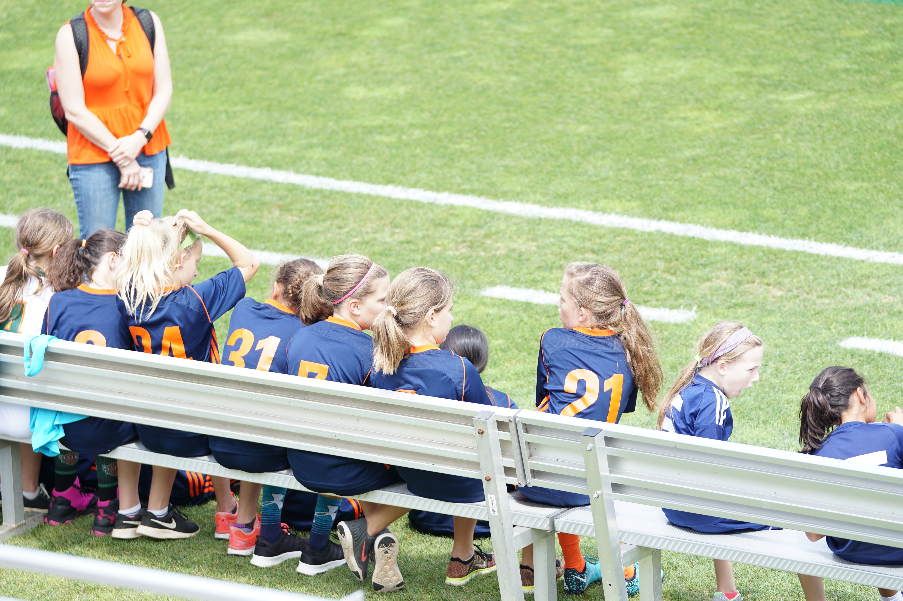

FEFI
FEFI cumple 30 años de trayectoria con el mayor torneo de fútbol infantil del país, con más de 450 equipos participantes en 24 zonas conformadas de 7 categorías (2016, 2010, 2015, 2011, 2014, 2013 y 2012), Seguí toda la estadística oficial del torneo. La Federación Escuela de Fútbol Infantil es otro tipo de torneo en el que participan seis zonas de dieciséis equipos de la A a la F y también hay seis zonas por colores: blanca, bordo, celeste, oro, verde y violeta.